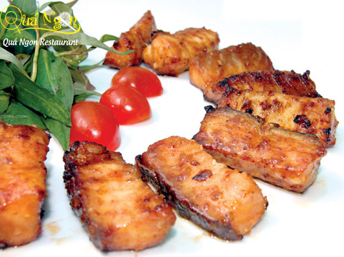

Cá tầm nướng muối ớt

Cá tầm luôn được coi là món ăn sang trọng, đắt tiền. Thịt cá tầm dai, thơm ngon, béo và thành phần dinh dưỡng vượt trội so với các loại cá thông thường.
Một trong những món cá tầm ngon trong thực đơn của Nhà hàng Quá Ngon là cá tầm nướng muối ớt. Một đĩa có thể phục vụ cho 3 – 4 người, với khẩu phần vừa đủ sẽ mang lại cảm giác đậm đà cho thực khách.